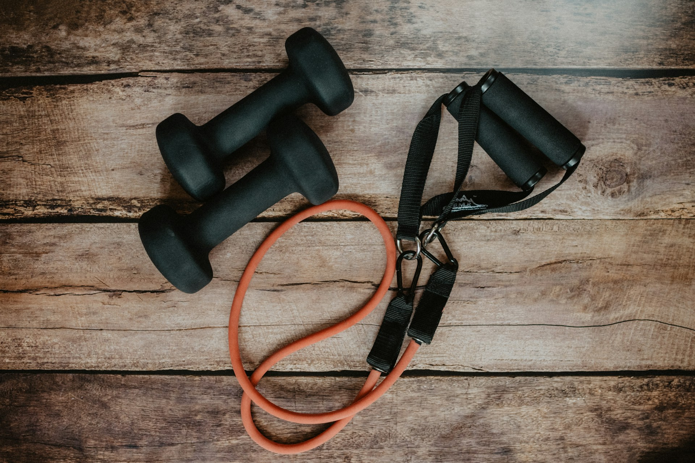
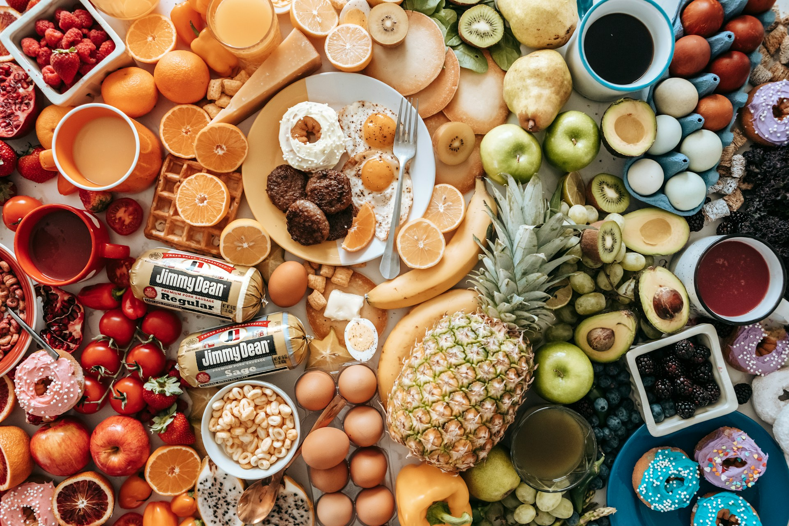

Izomépítés
4 edzési tipp az izmok növeléséhez
Az izomépítés legjobb étrendi alapelvei
A pihenés szerepe az izomépítésben
Miért fontos a hidratáció edzés közben?
4 edzési tipp az izmok növeléséhez
Az izmok növekedésének kulcsa a rendszeres, célzott edzés. Az alábbi tippek segítenek abban, hogy hatékonyabbá tedd az edzésprogramodat:
- Progresszív terhelés: Az izmaid akkor nőnek, ha folyamatosan új kihívások elé állítod őket.
- Komplex gyakorlatok: Az összetett gyakorlatok egyszerre több izomcsoportot dolgoztatnak meg.
- Helyes forma: Ügyelj a gyakorlatok pontos kivitelezésére.
- Pihenőidő: Tarts 60-90 másodperces szüneteket a szettek között.

Az izomépítés legjobb étrendi alapelvei
Az étrend az izomnövelés egyik legfontosabb pillére. Íme néhány alapelv, amelyeket érdemes követned:
- Fehérjedús táplálkozás: Egyél sovány húsokat, halat, tojást, tejtermékeket.
- Kalóriabevitel: Az izomnövekedéshez kalóriatöbbletre van szükség.
- Tápanyagok egyensúlya: Fogyassz összetett szénhidrátokat és egészséges zsírokat.
- Időzítés: Különösen figyelj az edzés utáni étkezésre.

A pihenés szerepe az izomépítésben
Az izmok növekedése nem az edzőteremben, hanem a pihenés alatt történik. A megfelelő regeneráció alapvető az izomtömeg növeléséhez:
- Alvás: Az alvás az izomregeneráció és a hormontermelés szempontjából létfontosságú.
- Pihenőnapok: Ne eddz minden nap! Legalább heti 1-2 napot szánj teljes pihenésre.
- Aktív regeneráció: Az enyhe mozgás, mint például séta vagy nyújtás, javítja a vérkeringést.
Miért fontos a hidratáció edzés közben?
A megfelelő hidratáció nemcsak az edzés teljesítményét javítja, hanem az általános egészséged szempontjából is elengedhetetlen:
- Teljesítmény: A kiszáradás csökkenti a fizikai teljesítményt.
- Regeneráció: A víz segíti az anyagcserét és az izmok regenerációját.
- Biztonság: A megfelelő hidratáció megakadályozza az izomgörcsöket.